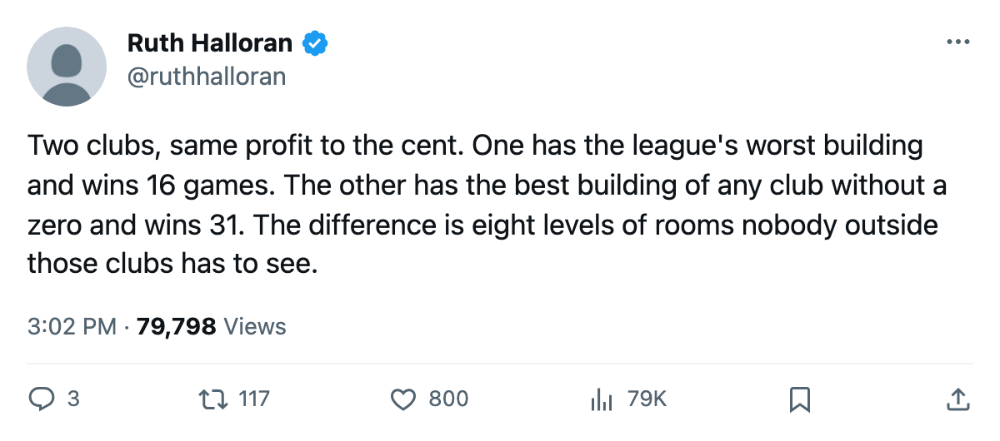
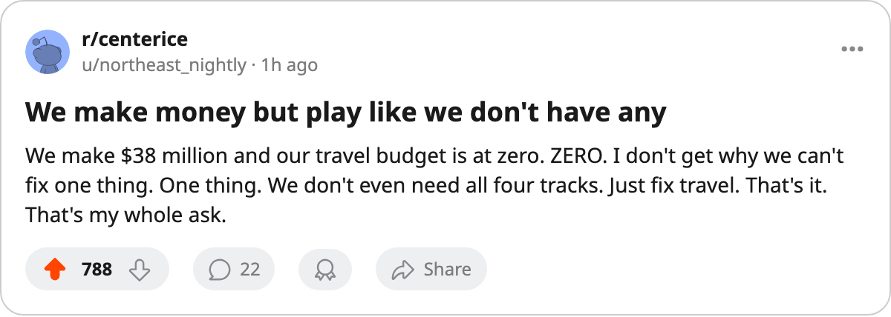

Two $38M Profits, 8 Levels of Building, 38 Points in the Table
Minnesota and New Jersey bank the same money. One has the league's worst building and the league's worst record. The other has neither.
 Ruth HalloranBusiness of hockey · The Building
Ruth HalloranBusiness of hockey · The BuildingThe piece
Minnesota profits $38.34M this season. New Jersey profits $38.35M. The gap is $0.01M. In the standings, the gap is 38 points:  New Jersey Devils at 93 and first in the Atlantic,
New Jersey Devils at 93 and first in the Atlantic,  Minnesota Wild at 55 and last in the Northwest.
Minnesota Wild at 55 and last in the Northwest.
The building explains the distance. New Jersey's four live facility tracks sum to -10, the second-best in the league behind Toronto's -6. Minnesota's sum to -18, tied for the worst alongside five other clubs. Eight levels of tuning file, same money in the bank.
What the tuning table says about these two
Minnesota sits at zero on equipment and zero on travel. Each carries a -6 modifier, the floor of that track. The workout room is at 1 (-4) and practice at 2 (-2). No Minnesota track is above 2. Every one of its four live tracks is below the par of 5, and the two zeros mean those players feel the full penalty on every shift at home and every shift on the road.
New Jersey has no track at zero. Equipment 1 (-4), workout 2 (-3), practice 2 (-2), travel 3 (-1). It is the only club in the league without a facility at absolute bottom. The live_sum gap of 8 levels is the widest between two clubs with profits within $1M of each other.
| club | equipment | workout | practice | travel | live sum | points | profit |
|---|---|---|---|---|---|---|---|
| NJ | 1 (-4) | 2 (-3) | 2 (-2) | 3 (-1) | -10 | 93 | $38.35M |
| MIN | 0 (-6) | 1 (-4) | 2 (-2) | 0 (-6) | -18 | 55 | $38.34M |
Where the money comes from and where it stops
Both clubs charge $80 a ticket. New Jersey's season attendance is 17,278, Minnesota's is 13,583. That 3,695-seat gap per night drives a revenue difference of $12.11M: $82.31M against $70.20M. Minnesota runs a $37.91M payroll to New Jersey's $44.98M, and that gap in spending is most of what keeps the profits even. The rest of the cost structure is not on the record.
What is on the record is that Minnesota has not touched its building since the ledger opened in December. New Jersey raised its workout room one level between December 4 and December 7. That is the only upgrade either club has made. Minnesota's GM Saki Corless holds the 4th-ranked prestige in the league at 602. None of it has moved a single track.
What the record cannot show
The locker room and the scouting room carry numbers in the file, and nothing in this pipeline reads them, so their effect on a player or a trade cannot be written here. Coaching, medical, marketing and legal are switched off entirely: they do nothing to potential, injury, attendance or contract in this build. Those four dead rooms are the same dead rooms in Minnesota as in New Jersey.
The four tracks that do move a rating, equipment, workout, practice and travel, are where the eight levels live. Minnesota's two zeros mean its players carry a full -6 on their skating attributes at home and on the road, a full -4 on strength and checking, and a -2 on everything at home through the practice rink. New Jersey carries less of all of that. On the ice, Minnesota reads -3.53, New Jersey reads -1.82. Nearly two full points of attribute penalty between the two clubs' own players, from the rooms they practise in and the roads they travel.
The practice ledger and the one club that moves
Toronto is the only club in the league that carries a practice endurance penalty: -10 on endurance, halved to -5 on overall. No other club has one. The system runs on one club and leaves the other twenty-nine at zero. Toronto's live_sum is the best at -6, but the endurance hit eats into what the building gives back.
New Jersey's single upgrade, workout +1 in early December, moved its live_sum from -11 to -10. One level, one track, $38.35M sitting in the bank. Minnesota sits at $38.34M and has made no move. The league files no news for an upgrade, so the only way to catch one is to compare the facility state between two saves. Minnesota's state has not changed since the ledger opened.
Cost per point at these two clubs. Minnesota pays $0.69M. New Jersey pays $0.48M. The cheaper club fills its building, keeps its men healthier in relative terms (121 days lost to 116, a wash), and wins 31 games to Minnesota's 16. The more expensive club per point, the one with the two zeros and the worst building and the 16 wins, makes the same profit and has done nothing about it.

